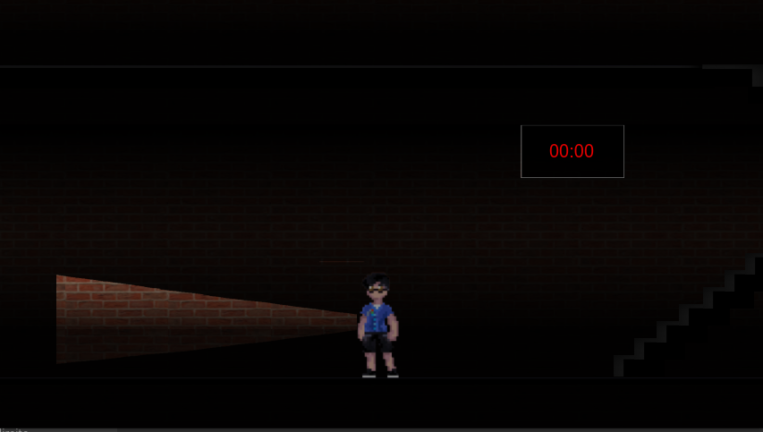

Projeto: Jogo - Bloco Maldito
Descrição:
O "Bloco Maldito" é um jogo desenvolvido como parte da disciplina Experiência Criativa. É um jogo plataforma de fuga com envolve suspense e desafios baseados em programação. O personagem principal João deve escapar do bloco antes que a aparição venha buscá-lo.
Características principais:
- Jogo simples, rápido e acessível
- Jogo modular para fácil expansão
- Ambientação caricata da nossa universidade
Desafios enfrentados:
- Aprendizagem da ferramenta Construct 3
- Desenvolvimento do jogo sob 3 pilares: Tempo, Enigmas e Iluminação
Ferramentas utilizadas: